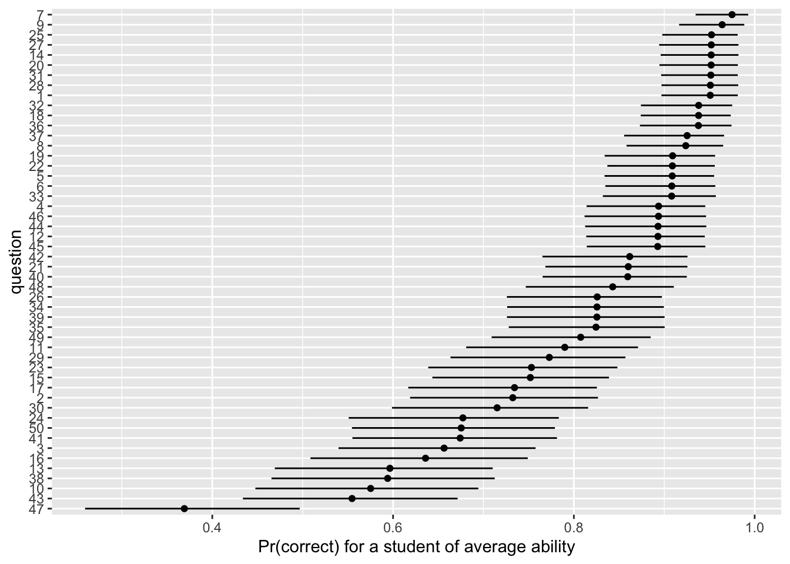
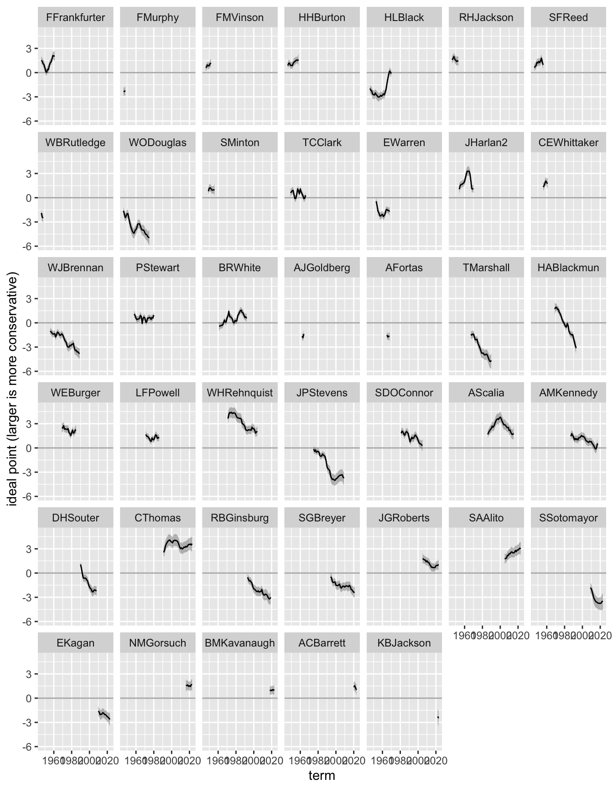
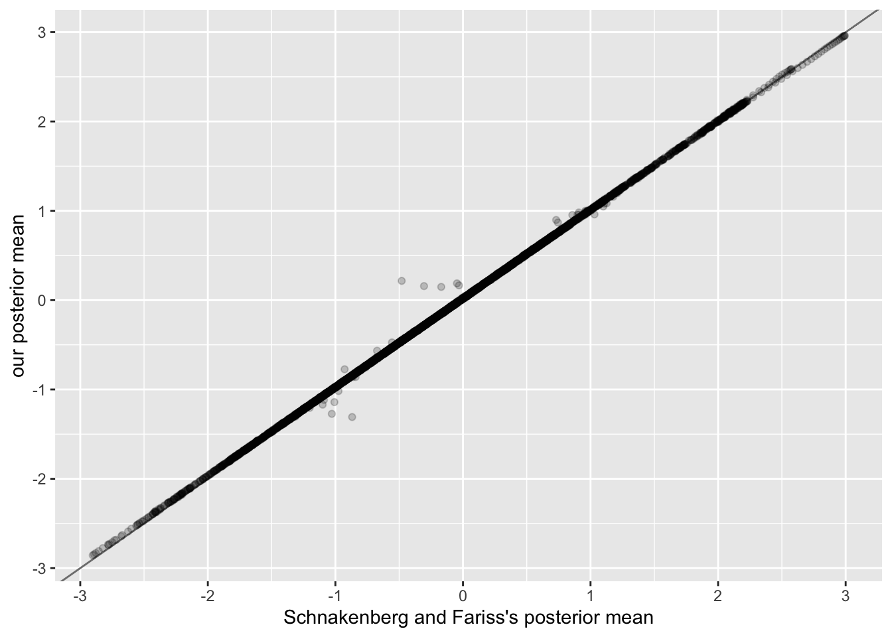
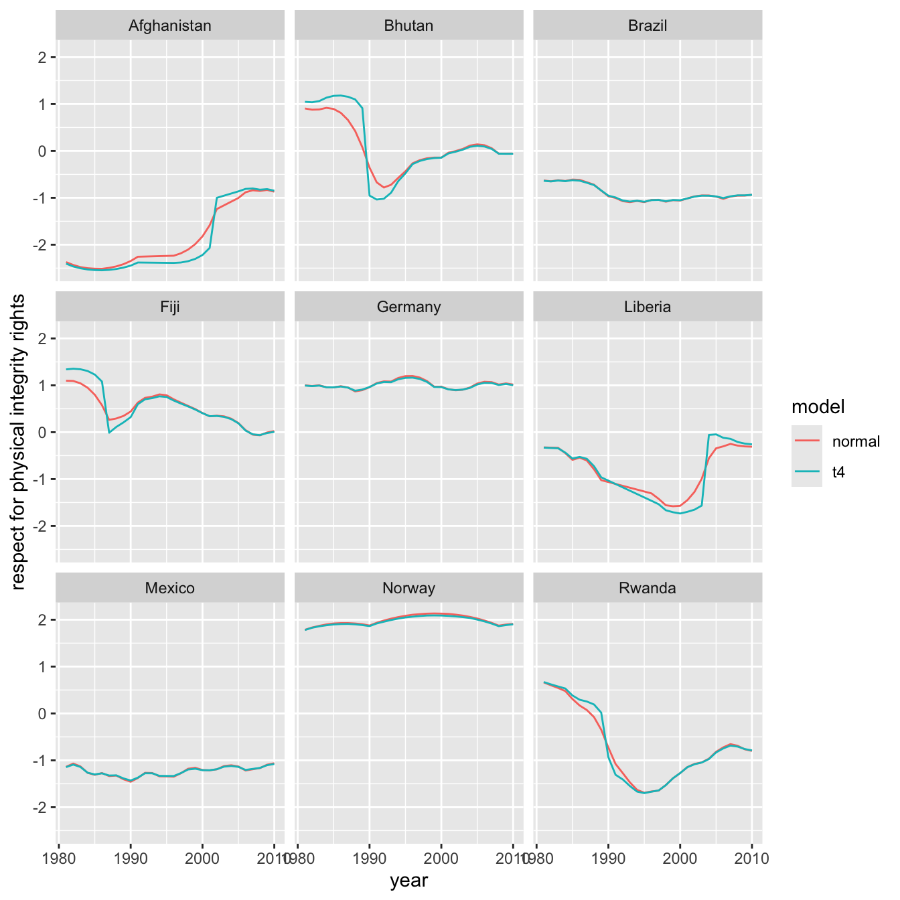

# load data; 50 simulated students, 50 questions
answers <- read_csv("https://pos5747.github.io/files/wk13-midterm-sim.csv")Week 13 Exercises
Complete solutions open Friday, November 20 at 12:00 PM
Exercise 1 The Midterm, Question by Question
In the IRT slides, we fit a Rasch model to hypothetical students answering the questions on a past exam. Here, the questions are the 50 multiple-choice questions on our midterm. The answers are simulated, but they mimic the real exam.
- I estimated each question’s difficulty from your graded exams with a Rasch model.
- Then I simulated 50 students taking the exam, with abilities \(\alpha_j \sim N(0, \sigma_\alpha^2)\). I set \(\sigma_\alpha = 0.89\), the estimate from the real exams. (I also centered the 50 abilities so they average exactly zero. Then “a student of average ability” means the same thing in the simulation and in your fit.)
student: the simulated student, 1 to 50.question: the question’s number on the midterm, 1 to 50.correct: 1 if the student answered the question correctly and 0 otherwise.
- Fit the Rasch model
correct ~ (1 | student) + (1 | question)withbrm(). Usefamily = bernoulliandbackend = "cmdstanr". - Use
predictions()to estimate, for each question, the chance that a student of average ability (\(\alpha_j = 0\)) answers it correctly. Plot the estimates with 90% credible intervals, sorted from hardest to easiest.
Hint
predictions() passes the argument re_formula along to {brms}, and re_formula says which random effects go into the prediction.
re_formula = NULL(the default) includes all of them. Sincedatagrid()fills instudentwith a single student, you get the predictions for that student, not for a student of average ability.re_formula = NAincludes none of them. It sets the student effects and the question effects to zero, so you get the same number for every question: the chance that an average student answers an average question correctly.re_formula = ~ (1 | question)includes only the question effects. The student effect is set to zero, so this is the one you want.
Complete solution
Part 1
fit <- brm(correct ~ (1 | student) + (1 | question),
data = answers,
family = bernoulli,
backend = "cmdstanr",
chains = 4, cores = 4,
seed = 1234)Part 2
# chance that a student of average ability answers each question correctly
p <- predictions(fit,
newdata = datagrid(question = 1:50),
re_formula = ~ (1 | question), # keep the questions, set the student effect to zero
conf_level = 0.90)
ggplot(p, aes(x = estimate, xmin = conf.low, xmax = conf.high,
y = reorder(factor(question), estimate))) +
geom_pointrange(size = 0.2) +
labs(x = "Pr(correct) for a student of average ability",
y = "question")
Exercise 2 Supreme Court Ideal Points
Martin and Quinn (2002) [doi] use an IRT model to estimate the ideology of each Supreme Court justice in each term. Using the exam context as an analogy, we can treat the justices as students and the cases as questions. We treat conservative votes as correct answers.
# load data; one row per vote
votes <- read_csv("https://pos5747.github.io/files/wk13-scotus-votes.csv")term: the Court’s term, 1946 to 2023. (A term starts in October. The 2023 term ran from October 2023 to June 2024.)case_idandcase_name: the case.justice: the justice, as the Supreme Court Database writes the name (e.g.,"AScalia").conservative: 1 if the justice’s vote was conservative and 0 if it was liberal, as coded by the Supreme Court Database (2024 Release 01).
The data include only the 5,390 cases in which at least one justice voted each way. (In a case where every justice votes the same way, the votes say nothing about who is more conservative.)
The model is the 2-PL model from the IRT slides, with a different ability for each justice in each term.
\[ \begin{aligned} \text{conservative}_n &\sim \text{Bernoulli}(\pi_n) \\ \pi_n &= \operatorname{logit}^{-1}\left( \gamma_{k[n]} \left( \theta_{j[n]t[n]} - \beta_{k[n]} \right) \right) \\ \theta_{jt} &\sim \begin{cases} N(0, 1) & \text{in justice } j\text{'s first term} \\ N(\theta_{j,t-1}, \sigma^2) & \text{in every later term.} \end{cases} \end{aligned} \]
- \(\theta_{jt}\) is the ideal point (ideology) of justice \(j\) in term \(t\). Larger values indicate a more conservative justice. (This is analogous to a student’s ability.)
- \(\beta_k\) is the cutpoint of case \(k\), so that a justice with \(\theta_{jt} = \beta_k\) is equally likely to cast a liberal or conservative vote. Justices to the right of the cutpoint (\(\theta_{jt} > \beta_k\)) are more likely to cast a conservative vote. Justices to the left are more likely to cast a liberal vote. The cutpoint is like the question’s difficulty—in a case with a large \(\beta_k\) only the most conservative justices are casting conservative votes.
- \(\gamma_k > 0\) is the discrimination of case \(k\). This parameter tells us how much the case separates the liberal and conservative justices. When \(\gamma_k\) is large, the votes follow ideology closely. When \(\gamma_k\) falls near zero, the votes do not follow ideology closely.
- The ideal points follow a random walk. Each term, a justice’s ideal point is “similar to” their ideal point in the last term. Formally, we say it equals the ideal point from the last term plus a normal innovation with SD \(\sigma\).
Here’s the Stan code and the R code to set up the data.
scotus_stan_code <- "
data {
int<lower=1> N; // number of votes
int<lower=1> K; // number of cases
int<lower=1> T; // number of justice-terms
array[N] int<lower=0, upper=1> y; // 1 = conservative vote
array[N] int<lower=1, upper=K> case; // case of vote n
array[N] int<lower=1, upper=T> jt; // justice-term of vote n
array[T] int<lower=0, upper=T> prev; // same justice's previous term (0 = first term)
}
parameters {
vector[T] z; // standardized first terms and steps
real<lower=0> sigma; // SD of a justice's step from one term to the next
vector[K] beta; // cutpoint of each case
vector<lower=0>[K] gamma; // discrimination of each case
}
transformed parameters {
vector[T] theta; // ideal point of each justice in each term
for (t in 1:T) {
if (prev[t] == 0) {
theta[t] = z[t]; // first term: theta ~ N(0, 1)
} else {
theta[t] = theta[prev[t]] + sigma * z[t]; // later terms: last term + a step
}
}
}
model {
z ~ std_normal();
sigma ~ normal(0, 0.5);
beta ~ normal(0, 2);
gamma ~ normal(0, 2);
y ~ bernoulli_logit(gamma[case] .* (theta[jt] - beta[case]));
}
"# one row per justice-term, in order within each justice
justice_terms <- votes |>
distinct(justice, term) |>
arrange(justice, term) |>
mutate(jt = row_number()) |>
group_by(justice) |>
mutate(prev = lag(jt, default = 0)) |> # the row of the same justice's previous term; 0 in the first term
ungroup()
# one row per case
cases <- votes |>
distinct(case_id, case_name) |>
mutate(case = row_number())
# add the indices to the votes
votes <- votes |>
left_join(justice_terms, by = c("justice", "term")) |>
left_join(cases, by = c("case_id", "case_name"))
scotus_data <- list(
N = nrow(votes),
K = nrow(cases),
T = nrow(justice_terms),
y = votes$conservative,
case = votes$case,
jt = votes$jt,
prev = justice_terms$prev
)- Fit the model with {cmdstanr}:
scotus_model <- cmdstan_model(write_stan_file(scotus_stan_code)), thenscotus_fit <- scotus_model$sample(data = scotus_data, chains = 4, parallel_chains = 4). (The fit takes about 15 minutes on a fast desktop.) Check R-hat and the ESS forsigmaandtheta. - Use the code below to plot each justice’s ideal point over time. Which justices moved the most over their careers?
# posterior medians and 90% intervals for each justice-term
ideal_points <- spread_draws(scotus_fit, theta[jt]) |>
median_qi(.width = 0.90) |>
left_join(justice_terms, by = "jt") |>
mutate(justice = fct_reorder(justice, term, .fun = min)) # panels in order of appointment
ggplot(ideal_points, aes(x = term, y = theta, ymin = .lower, ymax = .upper)) +
geom_hline(yintercept = 0, color = "grey70") +
geom_ribbon(alpha = 0.3) +
geom_line() +
facet_wrap(vars(justice)) +
labs(x = "term", y = "ideal point (larger is more conservative)")Complete solution
Part 1
scotus_model <- cmdstan_model(write_stan_file(scotus_stan_code))
scotus_fit <- scotus_model$sample(
data = scotus_data,
chains = 4,
parallel_chains = 4,
seed = 1234
)scotus_fit$summary(c("sigma", "theta")) |>
summarize(max_rhat = max(rhat),
min_ess_bulk = min(ess_bulk),
min_ess_tail = min(ess_tail))# A tibble: 1 × 3
max_rhat min_ess_bulk min_ess_tail
<dbl> <dbl> <dbl>
1 1.00 1421. 2311.All the R-hats are below 1.01 and the smallest ESS is above 1,000, so the chains agree and we have plenty of draws.
Part 2
# posterior medians and 90% intervals for each justice-term
ideal_points <- spread_draws(scotus_fit, theta[jt]) |>
median_qi(.width = 0.90) |>
left_join(justice_terms, by = "jt") |>
mutate(justice = fct_reorder(justice, term, .fun = min)) # panels in order of appointment
ggplot(ideal_points, aes(x = term, y = theta, ymin = .lower, ymax = .upper)) +
geom_hline(yintercept = 0, color = "grey70") +
geom_ribbon(alpha = 0.3) +
geom_line() +
facet_wrap(vars(justice)) +
labs(x = "term", y = "ideal point (larger is more conservative)")
Exercise 3 Human Rights Scores, Normal and Heavy-Tailed
Read Schnakenberg and Fariss (2014) [pdf]. They measure each country’s respect for physical integrity rights in each year with a dynamic IRT model of the four CIRI items. Fariss (2014) builds on their model, as do later versions of the human rights scores.
# the data: the four CIRI items, one row per country-year
ciri <- read_csv("https://pos5747.github.io/files/wk13-ciri.csv")
# the published scores we're trying to reproduce: Schnakenberg and Fariss's
# estimates, one row per country-year
sf2014 <- read_csv("https://pos5747.github.io/files/wk13-sf2014-scores.csv")ciri has 4,748 country-years (199 countries, 1981 to 2010).
countryandyear.disap,kill,polpris, andtort: the four CIRI items (disappearances, extrajudicial killing, political imprisonment, and torture). Each is coded 0 (50 or more instances), 1 (1 to 49), or 2 (none), so larger is better. A few are missing.
sf2014 has Schnakenberg and Fariss’s published estimates for the same country-years: the posterior mean (sf_mean) and SD (sf_sd).
The model is an ordered logit (from Week 6) for each item, with the latent trait in place of the linear predictor.
\[ \begin{aligned} y_{itj} &\sim \text{ordered logit}(\gamma_j \theta_{it}, \alpha_j) \\ \theta_{it} &\sim \begin{cases} N(0, 1) & \text{in country } i\text{'s first year} \\ N(\theta_{i,t-1}, \sigma^2) & \text{in every later year.} \end{cases} \end{aligned} \]
- \(y_{itj}\) is country \(i\)’s score on item \(j\) in year \(t\).
- \(\theta_{it}\) is the country’s respect for physical integrity rights in year \(t\). Larger is better.
- \(\gamma_j > 0\) is item \(j\)’s discrimination, and \(\alpha_j\) holds its two cutpoints.
- Like the justices’ ideal points, \(\theta_{it}\) follows a random walk.
- A few countries have gaps in coverage (Liberia, for example, has no data from 1990 to 1995). The code below treats the next year with data as the next step of the walk.
hr_stan_code <- "
data {
int<lower=1> N; // number of item responses
int<lower=1> T; // number of country-years
int<lower=1> J; // number of items (4)
array[N] int<lower=1, upper=3> y; // response, coded 1, 2, 3 (CIRI's 0, 1, 2)
array[N] int<lower=1, upper=T> cy; // country-year of response n
array[J] int<lower=1, upper=N> item_start; // the responses to item j are
array[J] int<lower=1, upper=N> item_end; // y[item_start[j]:item_end[j]]
array[T] int<lower=0, upper=T> prev; // same country's previous year (0 = first year)
int<lower=1> n_first; // number of countries
array[n_first] int<lower=1, upper=T> first; // country-years that are a country's first
array[T - n_first] int<lower=1, upper=T> later; // all the other country-years
}
parameters {
vector[T] z; // standardized first years and steps
real<lower=0> sigma; // scale of the steps from one year to the next
vector<lower=0>[J] gamma; // discrimination of each item
array[J] ordered[2] alpha; // two cutpoints for each item
}
transformed parameters {
vector[T] theta; // respect for physical integrity rights in each country-year
for (t in 1:T) {
if (prev[t] == 0) {
theta[t] = z[t]; // first year: theta ~ N(0, 1)
} else {
theta[t] = theta[prev[t]] + sigma * z[t]; // later years: last year + a step
}
}
}
model {
z[first] ~ std_normal(); // first years
z[later] ~ std_normal(); // steps of the random walk
sigma ~ normal(0, 1);
gamma ~ gamma(4, 3);
for (j in 1:J) {
alpha[j] ~ normal(0, 2);
y[item_start[j]:item_end[j]] ~ ordered_logistic(gamma[j] * theta[cy[item_start[j]:item_end[j]]], alpha[j]);
}
}
"# one row per country-year, in order within each country
country_years <- ciri |>
arrange(country, year) |>
mutate(cy = row_number()) |>
group_by(country) |>
mutate(prev = lag(cy, default = 0)) |> # the row of the same country's previous year; 0 in the first year
ungroup()
# one row per observed item response, sorted by item
responses <- country_years |>
pivot_longer(disap:tort, names_to = "item_name", values_to = "response") |>
filter(!is.na(response)) |>
mutate(item = as.integer(factor(item_name))) |>
arrange(item)
# where each item's responses start and end
item_counts <- count(responses, item)$n
hr_data <- list(
N = nrow(responses),
T = nrow(country_years),
J = 4,
y = responses$response + 1, # Stan's ordered_logistic() wants 1, 2, 3
cy = responses$cy,
item_start = cumsum(item_counts) - item_counts + 1,
item_end = cumsum(item_counts),
prev = country_years$prev,
n_first = sum(country_years$prev == 0),
first = which(country_years$prev == 0),
later = which(country_years$prev != 0)
)- Fit the model with {cmdstanr}, as in the previous exercise. (It takes about 10 minutes.) Check R-hat and the ESS. Then compare your posterior means of \(\theta_{it}\) with Schnakenberg and Fariss’s
sf_mean. Did you reproduce their measure? - The normal random walk makes large steps very unlikely, so it might spread a sudden change (a coup, a civil war, a new government) over several years. Reuning, Kenwick, and Fariss (2019) [pdf] replace the normal step with a Student’s \(t\) with four degrees of freedom, which allows an occasional large step while keeping the typical step small. Fariss, Kenwick, and Reuning (2020) [pdf] use this \(t\) random walk for the current version of the human rights scores. Read pp. 506–508 of Reuning, Kenwick, and Fariss. Then change one line of the model block,
stan z[later] ~ std_normal(); // steps of the random walktostan z[later] ~ student_t(4, 0, 1); // steps of the random walkand fit the model again. (Now \(\sigma\) is the scale of the \(t\) distribution, not its SD. The SD of a \(t\) with four degrees of freedom is \(\sqrt{2}\) times its scale.) Then plot both models’ \(\theta_{it}\) over time for nine countries: five with dramatic changes (Afghanistan, Bhutan, Fiji, Liberia, and Rwanda) and four without (Brazil, Germany, Mexico, and Norway). Helper:c("Afghanistan", "Bhutan", "Fiji", "Liberia", "Rwanda", "Brazil", "Germany", "Mexico", "Norway"). How do the two models differ?
Hint
fit$summary("theta")$mean gives the posterior mean of each \(\theta_{it}\), in the same order as the rows of country_years. Add it to country_years with mutate().
Complete solution
Part 1
hr_model <- cmdstan_model(write_stan_file(hr_stan_code))
hr_fit <- hr_model$sample(data = hr_data, chains = 4, parallel_chains = 4, seed = 1234)hr_fit$summary(c("sigma", "gamma", "theta")) |>
summarize(max_rhat = max(rhat),
min_ess_bulk = min(ess_bulk),
min_ess_tail = min(ess_tail))# A tibble: 1 × 3
max_rhat min_ess_bulk min_ess_tail
<dbl> <dbl> <dbl>
1 1.01 1360. 2000.All the R-hats are below 1.01 and the smallest ESS is above 1,000.
# add the posterior means to the country-years and join the published estimates
estimates <- country_years |>
mutate(normal = hr_fit$summary("theta")$mean) |>
left_join(sf2014, by = c("country", "year"))
cor(estimates$normal, estimates$sf_mean)[1] 0.9998553ggplot(estimates, aes(x = sf_mean, y = normal)) +
geom_abline(intercept = 0, slope = 1, color = "grey50") +
geom_point(alpha = 0.2) +
labs(x = "Schnakenberg and Fariss's posterior mean",
y = "our posterior mean")
Yes. Our posterior means and theirs are correlated at 0.9999, and the points fall along the line y = x.
Part 2
# change the one line
hr_stan_code_t <- sub("z[later] ~ std_normal();", "z[later] ~ student_t(4, 0, 1);",
hr_stan_code, fixed = TRUE)
hr_model_t <- cmdstan_model(write_stan_file(hr_stan_code_t))
hr_fit_t <- hr_model_t$sample(data = hr_data, chains = 4, parallel_chains = 4, seed = 1234)
invisible(hr_fit_t$draws()) # read the draws into memory so the cached fit keeps themestimates <- estimates |>
mutate(t4 = hr_fit_t$summary("theta")$mean)
estimates |>
filter(country %in% c("Afghanistan", "Bhutan", "Fiji", "Liberia", "Rwanda", # dramatic changes
"Brazil", "Germany", "Mexico", "Norway")) |> # no dramatic changes
pivot_longer(c(normal, t4), names_to = "model", values_to = "theta") |>
ggplot(aes(x = year, y = theta, color = model)) +
geom_line() +
facet_wrap(vars(country)) +
labs(y = "respect for physical integrity rights")
# Bhutan's items and the two models' estimates
estimates |>
filter(country == "Bhutan", year %in% 1984:1994) |>
select(year, disap, kill, polpris, tort, normal, t4)# A tibble: 11 × 7
year disap kill polpris tort normal t4
<dbl> <dbl> <dbl> <dbl> <dbl> <dbl> <dbl>
1 1984 2 2 2 2 0.919 1.14
2 1985 2 2 2 2 0.896 1.18
3 1986 2 2 2 2 0.813 1.18
4 1987 2 2 2 2 0.660 1.16
5 1988 2 2 2 2 0.425 1.10
6 1989 2 2 1 2 0.0787 0.913
7 1990 0 1 0 2 -0.355 -0.953
8 1991 0 1 0 0 -0.670 -1.04
9 1992 0 1 0 0 -0.781 -1.02
10 1993 0 2 0 0 -0.721 -0.891
11 1994 2 1 0 1 -0.574 -0.644In Brazil, Germany, Mexico, and Norway, the two models agree. In the five countries with dramatic changes, they don’t.
Bhutan shows why. Its four items are perfect through 1988, then three of them fall sharply by 1990.
- The normal model can’t take one large step, so it spreads the fall over several years. It starts Bhutan’s decline in 1985, years before the items change.
- The \(t\) model holds Bhutan flat through 1988 and puts almost all of the fall in 1990, when the items change.
Afghanistan (where the Taliban fell in 2001), Fiji (with its two coups in 1987), Liberia (where the civil war ended in 2003), and Rwanda (where the civil war started in 1990) show the same pattern. This is Reuning, Kenwick, and Fariss’s point. The normal random walk can smooth away sudden changes. The \(t\) random walk allows sudden, large changes.
References
Fariss, Christopher J. 2014. “Respect for Human Rights Has Improved over Time: Modeling the Changing Standard of Accountability.” American Political Science Review 108 (2): 297–318. https://doi.org/10.1017/S0003055414000070.
Fariss, Christopher J., Michael R. Kenwick, and Kevin Reuning. 2020. “Estimating One-Sided-Killings from a Robust Measurement Model of Human Rights.” Journal of Peace Research 57 (6): 801–14. https://doi.org/10.1177/0022343320965670.
Martin, Andrew D., and Kevin M. Quinn. 2002. “Dynamic Ideal Point Estimation via Markov Chain Monte Carlo for the U.S. Supreme Court, 1953–1999.” Political Analysis 10 (2): 134–53. https://doi.org/10.1093/pan/10.2.134.
Reuning, Kevin, Michael R. Kenwick, and Christopher J. Fariss. 2019. “Exploring the Dynamics of Latent Variable Models.” Political Analysis 27 (4): 503–17. https://doi.org/10.1017/pan.2019.1.
Schnakenberg, Keith E., and Christopher J. Fariss. 2014. “Dynamic Patterns of Human Rights Practices.” Political Science Research and Methods 2 (1): 1–31. https://doi.org/10.1017/psrm.2013.15.